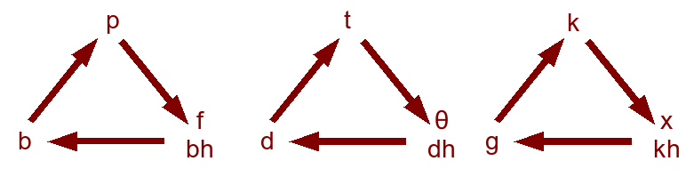

Grimm's Law and Verner's Law Notes
Posted: Mar 05, 2007 14:03;
Last Modified: May 23, 2012 19:05
Keywords:
Grimm’s Law
Grimm’s law concerns an unconditioned sound change that affects all
Indo-European stops. In this change (examples mostly from Brinton and Arnovick),
Voiceless stops became voiceless fricatives
| PIE | PGmc | Examples |
| Voiceless stops | Voiceless fricatives | |
| *p | *f | PIE *peisk- vs. OE fisc ‘fish’ |
| *t | *θ | PIE *tenu ‘to stretch’ vs. PDE thin |
| *k | *x or *h (word-initial) | PIE *krewə ‘raw meat/blood’ vs. OE hrēaw ‘raw’ |
| *kw | *xw or *hw (word-initial) | PIE *kwod ‘what’ vs. OE hwæt ‘what’ |
Voiced stops became voiceless stops
| PIE | PGmc | Examples |
| Voiced stops | Voiceless stops | |
| *b | *p | PIE *kan(n)abi- ‘cannabis’ vs. PDE hemp |
| *d | *t | PIE *dekm vs. PDE ten |
| *g | *k | PIE *grənom vs. PDE corn |
| *gw | *kw | PIE *gwei- vs. OE cwicu ‘alive’ |
Voiced aspirated stops became voiced fricatives and then voiced stops.
| PIE | PGmc | Examples | |
| Voiced aspirated stops | Voiced fricatives | Voiceless Fricatives | |
| *bh | *β | *b | PIE *bhrāter vs. OE broþer |
| *dh | *ð | *d | PIE * əndhero- vs. OE under |
| *gh | *ɣ | *g or *h (word-initial) | PIE *wegh vs. OE weg ‘road, way’ |
| *gwh | *ɣw | *g or *w | PIE *gwher ‘to heat’ vs. OE warm |
Verner’s law
The first group mentioned above (voiceless stops) underwent an additional change in certain contexts due to the change from variable accent in Indo-European to fixed initial accent in Germanic. When these sounds appeared in a voiced environment (i.e. not initially or finally or next to other voiceless consonants) and were not immediately proceeded by the Indo-European stress, they went on to become a voiced stop. Under the same conditions, Indo-European */s/ became Germanic */r/.
| PIE | PGmc | Examples | |
| Voiceless stops | Voiced fricatives | Voiced stops | |
| *p | *β | *b | PIE *septm vs. Gothic síbun ‘seven’ |
| *t | *ð | *d | PIE *pətēr vs. OE fæder ‘father’ (medial sound: d rather than t) |
| *k | *ɣ | *g | PIE *dukā vs. OE togian ‘tow’ |
| *s | *z | *r | PIE *ghaiso ‘stick’ vs. OE gār ‘spear’ |
A mnemonic
A useful way of remembering these sound changes (taught to me by Philip Rusche of UNLV) is to diagram each row of the above tables as a triangle:

To find the result of Grimm’s law, go one step clockwise around the triangle. Thus using the first triangle, we can see that PIE *bh became Gmc *b, PIE *b became Gmc *p, and PIE *p became Gmc *f. Verner’s law only affects the consonants at the top of the triangle. To see what they became after the effect of Verner’s law, go two steps clockwise around the triangle: so PIE *p became Gmc *b when it was subject to Verner’s law.

Comment [11]
Jelena Markovic (Sun Apr 8, 2007 (20:13:13)) [PermLink]: I just wanted to thank you. You’ve been of graet help to me; I am a student of English language and literature at Belgrade University, Serbia.History of the English language is my final exam and you really helped me to prepare it. Thank you once more. Kindest regards Jelena
Bo Bae Lee (Sat Apr 26, 2008 (18:20:45)) [PermLink]: Hello Professor. I wanted to say thank you as well:). It has been helping me a lot! I am majoring in English at University in Korea. I’m preparing for history of Englsih organization so that I have to know concept of these laws. It helps me to memorize easily and understand easily. Thank you!!!
Sylvie Tarride (Mon Mar 30, 2009 (19:09:26)) [PermLink]: Thank you, you helped me nail down Verner’s and Grimm’s Laws
Sylvie Tarride (Sun Jul 19, 2009 (11:22:58)) [PermLink]: I was just browsing the net. And I just found it bizarre that I am studying IE linguistics, and that we have the same name. Tarride is not that common.
dan (Sun Jul 19, 2009 (15:01:47)) [PermLink]: And you are both in the same city and at the same IP Provider… Are you sure you just haven’t driven the memory of your last visit here from your mind?
yasmin alam (Wed Jan 13, 2010 (07:06:51)) [PermLink]: thaanks alot it helped me alot ….
WIBONELLA,Msumi (Sun May 16, 2010 (10:12:25)) [PermLink]: I just want to say thank you profesor, your notes helped me so much on my first individual asignment,Am taking B.A, English, University of Dodoma Tanzania.
Viktoria (Fri Dec 17, 2010 (16:12:45)) [PermLink]: so nice that we are learning english all over the world, Korea, Serbia, Tanzania, and I am from Hungary…and accidentally we all ended up on this site!:)
Priya (Thu Jan 6, 2011 (07:23:22)) [PermLink]: Thanks a lot for ur great assistance,i m a student of English at Magadh Mahilla College in Patna,Bihar.Your guidance has really proved to be very usefull to me,thanx a lot again….
eman (Wed Mar 2, 2011 (06:03:24)) [PermLink]: thank you for sharing this information, it really help me in understanding the Grimm’s Law. iam a student of English Language and Literature in Princess Nora University.
ALFRED BENJAMIN BAIDEN (Fri Sep 2, 2011 (08:13:46)) [PermLink]: Thanks a lot and God richly bless you for the good work you are doing, prof.I am a student of the University of Ghana and I find your explanations very useful.
Commenting is closed for this article.